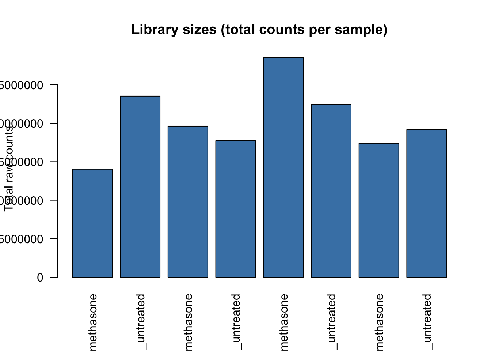

Sanity Checks
📌 Remember: Always do a sanity check!
Are We Working with Raw Counts?
DESeq2 requires raw, un-normalised integer counts. Feeding it normalised values (TPM, FPKM) will produce incorrect results.
📌 Remember: Always verify your input before proceeding.
options(scipen = 999)
kable(count_genes[1:6, ],
caption = "Raw count matrix — first 6 genes",
format.args = list(big.mark = ",")) %>%
kable_styling(bootstrap_options = c("striped", "hover", "condensed"),
full_width = FALSE)| N052611_dexamethasone | N052611_untreated | N061011_dexamethasone | N061011_untreated | N080611_dexamethasone | N080611_untreated | N61311_dexamethasone | N61311_untreated | |
|---|---|---|---|---|---|---|---|---|
| A1BG | 74 | 102 | 111 | 98 | 99 | 58 | 175 | 157 |
| A1CF | 0 | 0 | 0 | 0 | 1 | 0 | 0 | 0 |
| A2BP1 | 0 | 0 | 0 | 0 | 0 | 0 | 0 | 0 |
| A2LD1 | 30 | 40 | 43 | 31 | 46 | 33 | 42 | 40 |
| A2M | 26,857 | 31,832 | 33,372 | 32,008 | 9,883 | 2,330 | 15,200 | 19,789 |
| A2ML1 | 0 | 1 | 0 | 1 | 1 | 0 | 0 | 0 |
barplot(colSums(count_genes),
main = "Library sizes (total counts per sample)",
ylab = "Total raw counts",
xlab = NULL,
col = "steelblue",
las = 2,
names.arg = colnames(count_genes))
💡 Tip: scipen = 999 is a penalty against scientific notation. R uses it to decide when to switch between fixed (150000) and scientific (1.5e+05) format. The default is scipen = 0 — by setting it to 999 you make the penalty so high that R almost never switches to scientific notation, preferring plain numbers instead.
Raw human RNA-seq counts span a very wide range (many genes near zero, a few in the hundreds of thousands). A highly right-skewed distribution is expected and correct at this stage.
Pre-filtering Low-count Genes
Genes with very few counts across all samples carry no statistical power and inflate the multiple testing burden. We remove genes that do not have at least 10 counts in a minimum number of samples (equal to the size of the smallest group).
The human genome has roughly 20,000 protein-coding genes plus many non-coding ones, and a large fraction are not expressed in ASM cells — expect a substantial number to be filtered out.
smallestGroupSize <- min(table(samples_info$condition))
cat("Smallest group size :", smallestGroupSize, "\n")## Smallest group size : 4## Filtering threshold : at least 10 counts in 4 or more sampleskeep <- rowSums(counts(dds) >= 10) >= smallestGroupSize
n_before <- nrow(dds)
dds <- dds[keep, ]
cat("Genes before filtering:", n_before, "\n")## Genes before filtering: 25924## Genes after filtering: 14080## Genes removed : 11844Factor Order and Reference Level
The first factor level is always the reference (denominator) in DESeq2 comparisons. Setting it explicitly ensures fold changes are computed in the intended direction: treatment (dexamethasone) vs control (untreated), not the reverse.
## [1] "control" "treatment"📌 Remember: The reference level determines the direction of fold changes. A positive log2FC means higher expression in dexamethasone-treated cells relative to untreated.